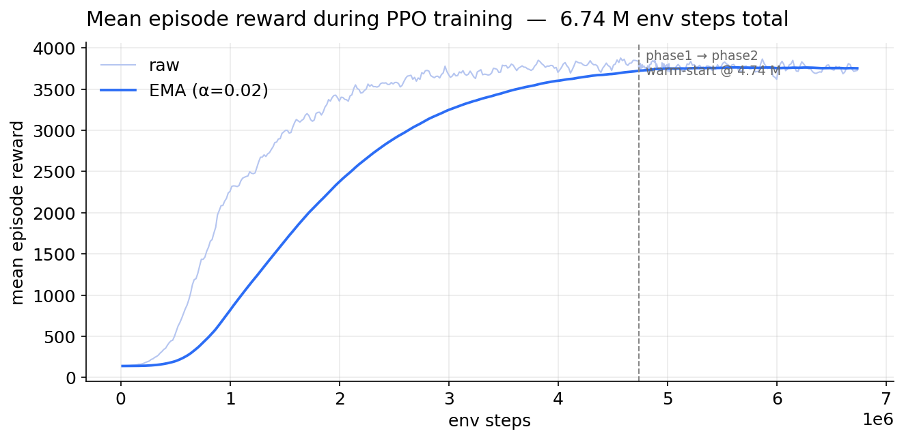
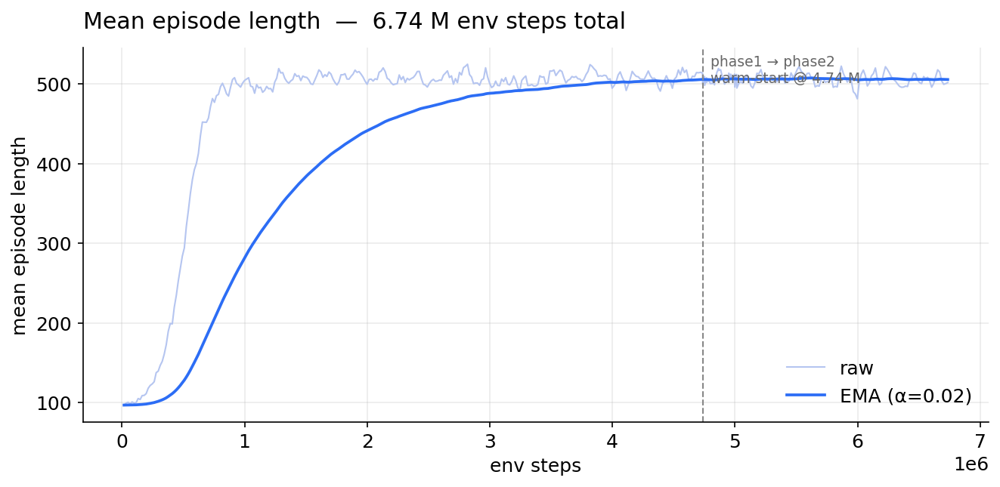

Safe trajectory tracking for an aerial manipulator
PPO policy filtered by an MPC with a Barrier Lyapunov Function
Skydio X2 + 3-DoF arm, MuJoCo · PPO logs/continue_7M/best_model.zip ·
5 seeds × 20 eps = 100 traj episodes · CasADi + Fatrop
Aerial manipulation is where learned control stops being safe
- Base: Skydio X2 quadrotor. Payload: 3-DoF arm → time-varying mass distribution and COM offset.
- Task: follow a randomly-sampled 7th-order min-snap trajectory to a 15 cm goal tolerance, then hover.
- PPO alone tracks well on average but transient peaks blow past the safety tube, and a folded arm can crash it outright.
- We want the learned reactivity and a provable envelope — without retraining the policy.
Three concrete failure modes we targeted
① Lateral tube violations
During aggressive min-snap segments PPO peaks at 22 cm lateral error — 83% bigger than our 12 cm corridor.
② Wind gusts
A 2.5 N lateral pulse (wind-high) drives the baseline into a 52 cm post-pulse swing; it never settles within 10 s.
③ Arm folding (COM shift)
Holding the arm at $[\,0,\,-1.5,\,1.5\,]$ rad shifts the COM off-axis. PPO crashes after $\sim\!12$ s; it was never trained on this.
Goal: keep the base-position error strictly inside a $\delta$-tube at every control step, $\;\|\mathbf{p}(t)-\mathbf{p}^{\star}(t)\|<\delta\;\forall t\;$, and stay close to PPO whenever PPO is already safe.
Architecture: PPO proposes, MPC-BLF filters
PPO — reactive layer
- 7-D action (4 rotors + 3 arm joints), 28-D obs (qpos, qvel, relative target).
- Trained 5 M + 2 M steps, SB3 PPO, 16 parallel envs, $\sim\!0.9$ ms / step.
MPC-BLF — safety layer
- Receding horizon $N\!=\!7$, $dt\!=\!10$ ms, full nonlinear 12-state dynamics.
- Only overrides the 4 rotors; arm joints pass through untouched.
Receding-horizon MPC over the full quadrotor
Dynamics use the full $\mathbf{R}(\phi,\theta,\psi)$ thrust rotation + Coriolis $\boldsymbol{\omega}\!\times\!\mathbf{J}\boldsymbol{\omega}$, integrated by RK4 at $dt = 10$ ms.
Barrier Lyapunov Function — safety as a potential wall
- $\sigma$ is a single scalar, heavily penalised by $\rho\sigma^{2}$ in the cost — nonzero only when the motor envelope rules out strict contraction.
- Finite $V$ $\Rightarrow$ forward-invariant $\delta$-tube over the horizon.
Full pipeline (1/2) — reference, policy, dynamics
$(w_p,w_v,w_e,w_u,b,w_g,k_p,k_v,k_e,k_g,k_s,C)$ $= (2,1,3,0.01,0.1,5,\,2,1,3,50,2,\,50)$.
Full pipeline (2/2) — BLF, OCP, applied control
Decision variables $X\!\in\!\mathbb R^{12\times(N+1)}$, $U\!\in\!\mathbb R^{4\times N}$, $\sigma\!\in\!\mathbb R_{\ge 0}$. Solved in CasADi with Fatrop, warm-started from the previous solution rolled forward.
Fallback to raw $\mathbf a^{\mathrm{ppo}}_t$ if $z_0\!\ge\!\delta_{\mathrm{out}}^{2}$ or the solver fails. Between stride solves, raw PPO is applied (no ZOH).
If $\sigma=0$, then $V(z_{k+1})\le\beta_k V(z_k)<\infty$ $\Rightarrow z_{k+1}<\delta^{2}$ — the $\delta$-tube is forward-invariant over the horizon. Measured $\sigma\!>\!0$ on $<\!1\%$ of steps, matching the 0% tube-violation rate.
Tuned defaults and what each knob does
| flag | symbol | traj | disturb | role |
|---|---|---|---|---|
--tube | $\delta$ | 0.12 m | 0.12 m | BLF tube radius; $V$ finite iff inside |
--mpc-horizon | $N$ | 7 | 7 | plan length at $dt = 10$ ms |
--mpc-stride | — | 1 | 2 | NLP solved every $k$ env steps |
--beta-start | $\beta_0$ | 0.95 | 0.95 | loose near-term contraction |
--beta-end | $\beta_{N-1}$ | 0.15 | 0.15 | strict terminal contraction |
--slack-penalty | $\rho$ | $10^{3}$ | $10^{4}$ | weight on $\rho\sigma^{2}$ in cost |
--velocity-penalty | $w_v$ | $5\!\cdot\!10^{4}$ | $5\!\cdot\!10^{4}$ | D-term on $\|\mathbf{v}-\mathbf{v}^{\star}\|^{2}$ |
--barrier-velocity-weight | $\alpha$ | 0.03 | 0.1 | velocity-aware barrier lookahead$^2$ |
--smooth-penalty | $\lambda$ | $10^{-2}$ | $10^{-2}$ | $\|\Delta U_k\|^{2}$ smoothing |
--mpc-solver | — | fatrop | fatrop | structure-exploiting IP |
Trajectory defaults picked by a grid sweep (scripts/tune_trajectory.py);
disturbance defaults from scripts/tune_wind_high.py +
tune_arm_fold.py. Only $\rho$ and $\alpha$ change between regimes.
Same seed (0), same min-snap clip — three controllers
PPO only
MPC tracking, BLF off
PPO + MPC + BLF
Note: per-episode tube viol can read 0% on lucky seeds; the aggregate 100-episode table below is the safety story.
Headline numbers — 5 seeds × 20 episodes = 100 deterministic runs
Seeds [0, 20, 40, 60, 80], same checkpoint logs/continue_7M/best_model.zip.
Table entries: mean ± std over the five seed-level means ($n{=}5$).
Source: videos/METRICS.txt, logs/multi_seed/summary.json.
| metric | PPO | PPO + MPC (BLF off) | PPO + MPC + BLF | comment |
|---|---|---|---|---|
| position RMSE [m] | 0.1413 ± 0.0038 | 0.0808 ± 0.0041 | 0.0643 ± 0.0008 | MPC alone −43%; +BLF another −20% |
| velocity RMSE [m/s] | 0.1719 ± 0.0157 | 0.0744 ± 0.0026 | 0.0665 ± 0.0032 | |
| peak err [m] | 0.2146 ± 0.0057 | 0.1182 ± 0.0069 | 0.0884 ± 0.0013 | |
| tube viol >12 cm | 53.53 ± 1.45% | 14.45 ± 5.21% | 0.00 ± 0.00% | BLF removes residual crossings |
| median solve [ms] | 1.22 ± 0.07 | 28.16 ± 0.34 | 33.39 ± 0.28 | stride = 1 (every step) |
| MPC fallback | — | 0.00% | 0.00% | |
| goal reach / crash | 100 / 100 goal · 0% crash (all three) | 15 cm tolerance | ||
Bar charts (means ± std across seeds)


Solve times: PPO inference vs MPC (BLF off) vs MPC+BLF at stride 1. Duty cycle 100% when MPC is on.
Arm-fold (shifted COM) — OOD for PPO
PPO only
MPC, BLF off
MPC + BLF

Honest limitations
4a. Compute cost is real
Trajectory eval uses stride $=\!1$ (MPC every step, $\sim\!33$ ms median for MPC+BLF). Disturbance eval uses stride $=\!2$ ($\sim\!42$ ms median on those runs).
4b. Things I tried that failed
- Zero-order hold between stride solves destabilised the inner attitude loop — replaced with "apply raw PPO between solves".
- Small-angle linearised dynamics in the MPC: plans disagreed with MuJoCo during aggressive banked turns. Fixed with the full $\mathbf{R}(\phi,\theta,\psi)$ thrust rotation + Coriolis.
- Hard BLF descent (no slack): NLP went infeasible at motor saturation. Scalar slack $\sigma$ with heavy $\rho\sigma^{2}$ penalty cured it without loosening the tube.
- Position-only barrier: drone coasted through the setpoint. Velocity-aware barrier + stage-wise velocity cost broke the indifference.
- PPO-only disturbance training: OOD arm-fold regime still crashes; the filter is what rescues it, not better data.
Things I thought would be trivial that weren't
Sign stability of ZYX Euler from MuJoCo quaternions
Double-cover flips in $q_w$ caused the MPC to see $\pm 180^{\circ}$ "jumps" and plan huge corrective torques. Fix: canonicalise $q_w \ge 0$ before extracting Euler angles.
MuJoCo actuator allocation ≠ textbook X-config
The allocation $\mathbf{M}$ has to come from
actuator_gear × site_pos. Hard-coding a
symmetric X-config silently offset $\tau_z$, giving yaw drift in
long episodes.
Warm-starting CasADi is make-or-break
Cold start: $\sim\!140$ ms and occasional Fatrop stalls. Warm start from previous solution: $\sim\!40$ ms median and almost no fallbacks.
Tuning a soft barrier is a 3-D fight
The triple $(\beta\text{-schedule},\,\rho,\,\alpha)$ all trade off solve time vs. aggressiveness vs. damping. Separate grid sweeps per regime (trajectory vs. disturbance) were needed; one-size-fits-all was worse at both.
Wind-high (2.5 N lateral pulse) — videos
PPO
MPC, BLF off
MPC + BLF
Stabilise phase after disturbance ends (seed 0)
Settling = position error < 5 cm for ≥ 0.5 s. All three use the same PPO checkpoint.
| mode | pos RMSE PPO | no-BLF | +BLF | pos max PPO | no-BLF | +BLF | settle <10 s | crash |
|---|---|---|---|---|---|---|---|---|
| wind-low | 0.0563 | 0.0579 | 0.0526 | 0.0715 | 0.0629 | 0.0565 | no / no / yes (8.97 s) | no / no / no |
| wind-high | 0.1379 | 0.0589 | 0.0471 | 0.5231 | 0.0784 | 0.0746 | no / no / yes (0.87 s) | no / no / no |
| arm-fold | 0.2360 | 0.0322 | 0.0309 | 1.4479 | 0.0374 | 0.0355 | — / yes (0.01 s) / yes (0.01 s) | YES / no / no |
Wind-low: MPC and BLF are similarly good (BLF is rarely active). Wind-high: BLF is what passes the 5 cm band.
Full phase logs in videos/METRICS.txt §2–3.
PPO learning curves (5 M + 2 M fine-tune, SB3)
Exported from TensorBoard / training logs — same policy as eval.


Takeaways for future learned-controller users
- Filter, don't re-train. A thin model-based safety layer fixed a catastrophic OOD failure (arm-fold) without touching PPO weights. Cheaper than curriculum + wind randomisation during training.
- Barrier Lyapunov > plain CBF here. A BLF is its own invariance certificate; one inequality per stage, $V(\mathbf{e})\!<\!\infty\!\Leftrightarrow\!\|\mathbf{e}\|\!<\!\delta$, no extra class-$\mathcal{K}$ tuning.
- Velocity-aware barriers matter for moving setpoints. A position-only barrier lets the drone coast through the goal at speed; $z=\|\mathbf{e}_p\|^{2}+\alpha\|\mathbf{e}_v\|^{2}$ removes that degeneracy.
- Fatrop + warm-start got a real-time-ish receding-horizon NLP onto a 7-DoF learned system in CasADi, $\sim\!40$ ms / solve, on CPU.
- Natural next steps. Hardware transfer, learning $\beta$ and $\alpha$ from data, and composing the same filter with a flow-matching trajectory generator instead of a hand-designed min-snap reference.
Repo: controllers/mpc_blf_filter.py (safety filter) ·
env/aerial_manipulator.py (Gymnasium env) ·
eval_ppo_mpc.py (trajectory eval) ·
eval_ppo_disturbance.py (disturbance eval) ·
videos/METRICS.txt (all numbers in these slides).